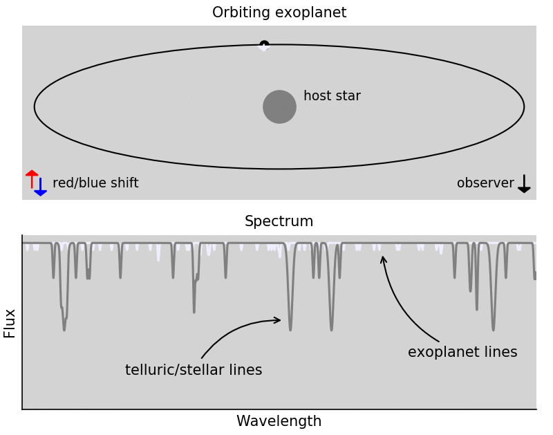
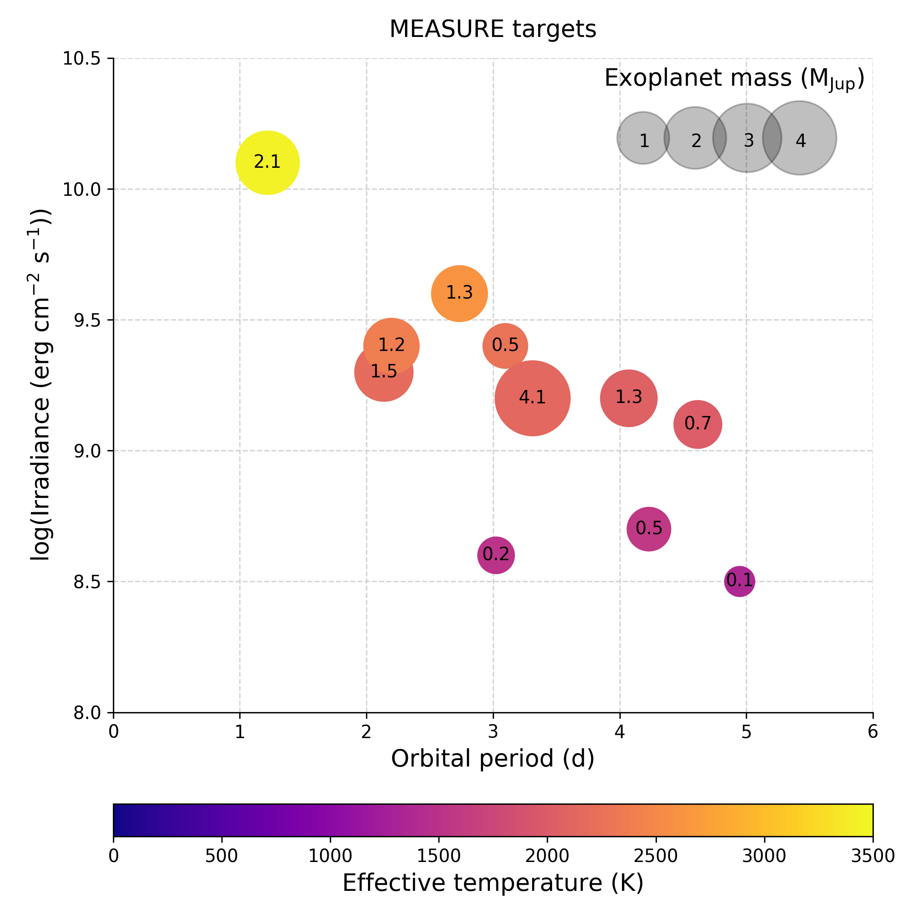
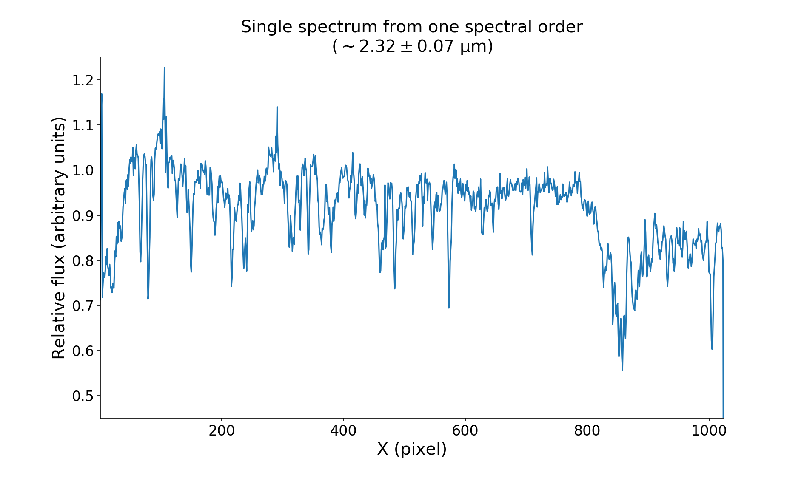

van Sluijs, Lennart (UvA); Birkby, Jayne (Oxford); Lothringer, Josh (JHU); Crossfield, Ian (KU, MIT); Charbonneau, David (Harvard); Kulesa, Craig (UArizona); McCarthy, Don (UArizona); Powell, Keith (UArizona)
Lennart van Sluijs
l.vansluijs@uva.nl
My personal webpage.
Abstract
Comparative exoplanetology of exoplanet atmospheres is key in understanding the observed diversity of exoplanets. This diversity results from different formation and evolutionary pathways which are imprinted in their atmospheres. However, the high contrast and small angular separation between the star and planet pose great observational challenges. One successful technique is high spectral resolution Doppler imaging, which separates the stellar and planetary spectral lines by their difference in radial velocity. Today this has only been done for a small number of planets, making comparative exoplanetology difficult. I present here analysis of new infrared spectra from the MEASURE program taken with ARIES at the MMT in Arizona. This data set contains high-resolution (R=30,000) spectral observations of eleven hot-Jupiters and sub-Saturns, covering a wide range of temperatures, radii and masses. This allows for comparative exoplanetology and linking these observations with different formation and evolutionary models. I will present preliminary results from observations of one of the hottest gas giants in the MEASURE survey, an ultra hot Jupiter.

Figure 1: Illustration of the principle behind the high resolution spectroscopy technique. The exoplanet's Doppler shift helps disentangle the exoplanet's atmospheric lines from the (quasi-) stationary telluric lines and stellar lines.The spectrum of an exoplanet contains valuable information about past and present physical and chemical processes. Direct extraction of this spectrum is extremely challenging due to the small angular separation and large contrast between the planet and it’s host star. The high resolution technique overcomes this difficulty by utilizing the exoplanet's orbital Doppler shifts to disentangle it’s resolved spectral lines from the (quasi-)stationery stellar and telluric lines (Snellen et al. 2010). So far this technique has been succesful in characterizing the atmospheres of a handful of exoplanets (for an overview see Birkby 2018).

Figure 2: Properties of the MEASURE targets. Their diversity makes them ideal for comparative exoplanetology.The Multiple Mirror Telescope Exoplanet Atmosphere Survey (MEASURE) data set contains high-resolution (R=30,000) spectral observations from the Arizona infrared imager and echelle spectrograph (ARIES, see McCarthy et al. (1998)) on the MMT (D=6,5 m). This diverse dataset contains hot-Jupiters and sub-Saturns with a wide range masses, temperatures and stellar irradiances. The survey's main goal is to perform comparative exoplanetology on a diverse set of worlds to improve our understanding of planet formation and their atmospheric processes.
To extract the MEASURE spectra we are developing an end-to-end data reduction pipeline for ARIES. The raw detector images are reduced by performing a crosstalk, dark, fringe, flat and badpixel correction. The fringe correction is extra challenging for ARIES as this needs to be performed on the detector flat images, before flat normalization. Using our modified version of the correction by Stone et al. (2014), we are able to successfully remove the flat fringes.

Figure 4: Extracted spectrum around the carbon monoxide band (2.3 micrometer) from one spectral order from one of the Ultra Hot Jupiters in the MEASURE dataset.We successfully extract all spectra for one of the Ultra Hot Jupiters observed by MEASURE. These spectra are still dominated by tellurics/stellar lines. We are currently working on removing their contamination based on the principle of the high resolution technique. This will be followed by a cross-correlation with a spectral template to search for relevant species and characterize the atmosphere.
Here we present a preliminary detection of CO for WASP-33b (Birkby et al. in prep.) as an example of a final result we may obtain for some of the other MEASURE targets.
After cleaning all spectra from stellar/telluric contamination and cross-correlation with a CO model the planet’s velocity trail is revealed.
Following alignment at the expected planet/system velocity, CO is detected at ~8 sigma.
Once finished we aim to make the pipeline publicly available as a data reduction pipeline for ARIES.
ARIES is currently being upgraded into MAPS which will have an updated AO system, broader instantaneous wavelength coverage and modes at a higher spectral resolution.
Therefore, we hope the work on this pipeline for ARIES will be helpful for MAPS as well.
Acknowledgements
This research is part of the exoZoo project that has received funding from the European Research Council (ERC) under the European Union’s Horizon 2020 research and innovation program under grant agreement No 805445.
Observations reported here were obtained at the MMT Observatory, a joint facility of the Smithsonian Institution and the University of Arizona.
References (links to NASA ADS)
Birkby (2018)
McCarthy et al. (1998)
Snellen et al. (2010)
Stone et al. (2014)